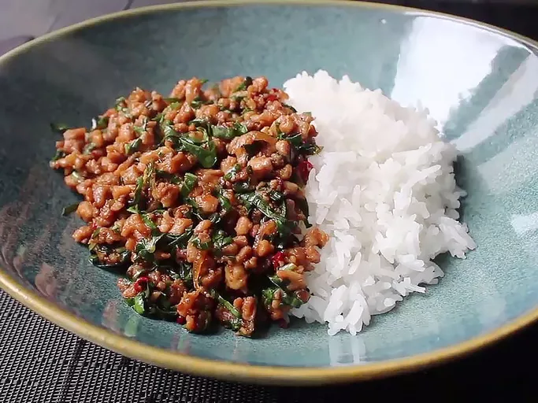

Spicy Thai Basil Chicken (Pad Krapow Gai)

My version of this classic Thai dish has spectacular taste even with regular basil instead of Thai or holy basil. The sauce actually acts like a glaze as the chicken mixture cooks over high heat. The recipe works best if you chop or grind your own chicken and have all ingredients prepped before you start cooking
- Prep Time: 15 Min.
- Cook Time: 10 Min.
- Total Time: 25 Min.
- Servings: 2
Ingredients
- ⅓ cup chicken broth
- 1 tablespoon oyster sauce
- 1 tablespoon soy sauce
- 1 teaspoon fish sauce
- 1 teaspoon sugar
- 1 tablespoon vegetable oil
- 4 cloves garlic, minced
- 2 Thai bird chilies, chopped (adjust to taste)
- 1 lb ground chicken
- 1 cup fresh Thai basil leaves
- Cooked jasmine rice, for serving
Instructions
- In a small bowl, combine chicken broth, oyster sauce, soy sauce, fish sauce, and sugar. Stir until sugar is dissolved. Set aside.
- Heat vegetable oil in a large skillet or wok over medium-high heat. Add minced garlic and chopped Thai bird chilies. Sauté for about 30 seconds until fragrant.
- Add ground chicken to the skillet. Cook, breaking it apart with a spatula, until it is no longer pink, about 5-7 minutes.
- Pour the sauce mixture over the cooked chicken. Stir well to combine and cook for another 2-3 minutes until the sauce thickens slightly.
- Remove from heat and stir in fresh Thai basil leaves until they are wilted.
- Serve the spicy Thai basil chicken over cooked jasmine rice. Enjoy!